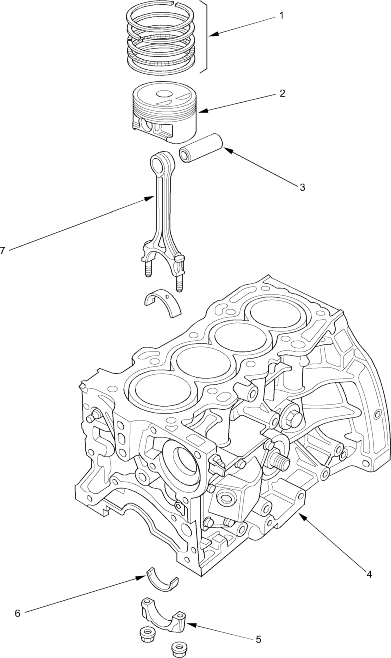

 |
- PISTON RINGS
Replacement, page 7-9
- PISTON
Removal, page 7-11 in the '01 Civic Shop Manual on this CD
Measurement, page 7-14 in the '01 Civic Shop Manual on this CD
- PISTON PIN
Removal, page 7-17 in the '01 Civic Shop Manual on this CD
Inspection, page 7-17 in the '01 Civic Shop Manual on this CD
Installation, page 7-17 in the '01 Civic Shop Manual on this CD
- ENGINE BLOCK
Cylinder bore inspection, page 7-14 in the '01 Civic Shop Manual on this CD
Warpage inspection, page 7-14 in the '01 Civic Shop Manual on this CD
Cylinder bore honing, page 7-16 in the '01 Civic Shop Manual on this CD
Ridge removal, page 7-11 in the '01 Civic Shop Manual on this CD
- CONNECTING ROD BEARING CAP
- CONNECTING ROD BEARINGS
Oil Clearance, page 7-7
Selection, page 7-8
- CONNECTING ROD
End play, page 7-6 in the '01 Civic Shop Manual on this CD
Small end measurement, page 7-17 in the '01 Civic Shop Manual on this CD
|